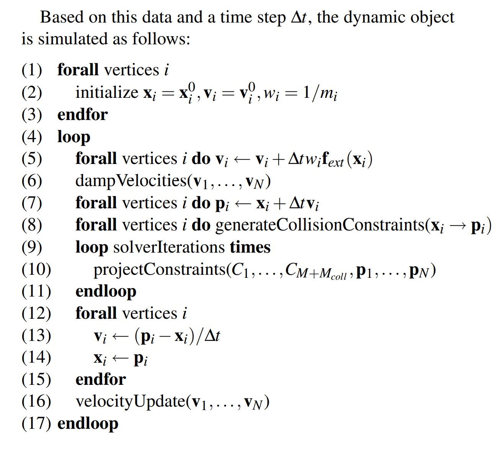
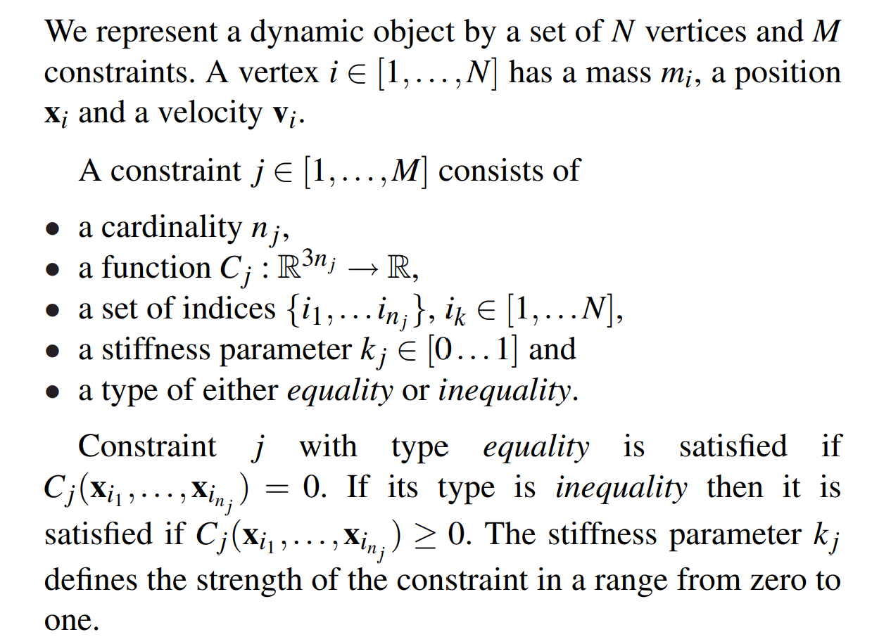
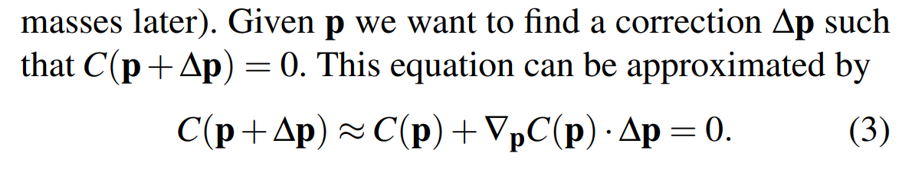
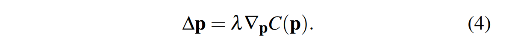
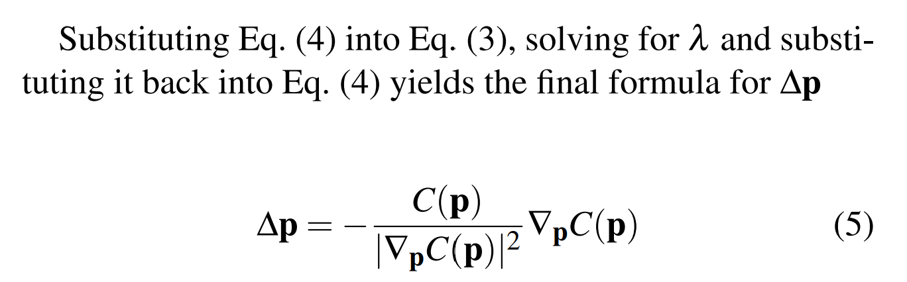
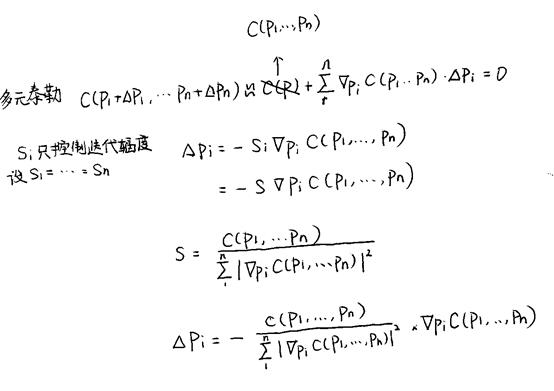
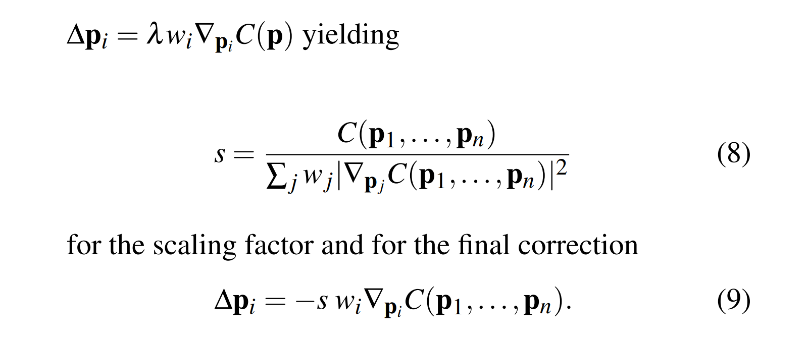
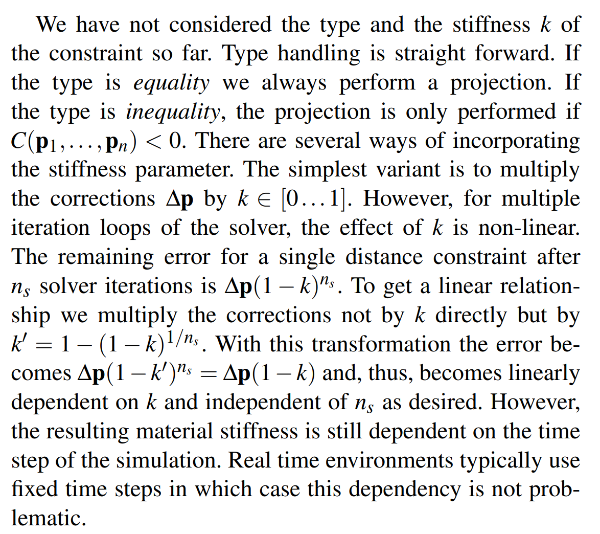
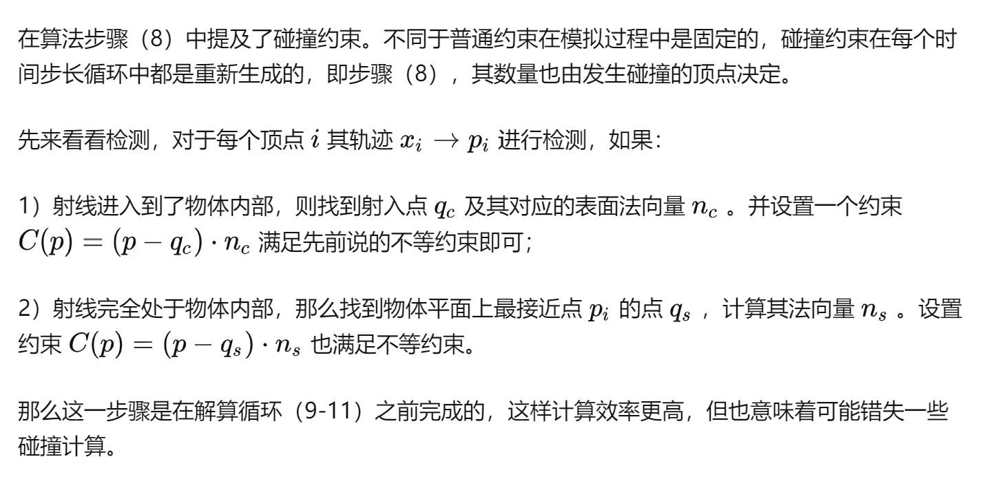
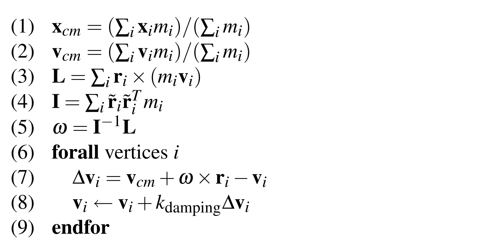

Position Based Dynamics 论文阅读
PBD算法整体流程分析
PBD思想的核心可以理解为解约束系统。PBD在额外处理重力等外力还有摩擦和恢复系数之外, 干的最重要的事情可以简略概括为：生成物体未来位置，然后把未来的物体位置在满足碰撞+弹簧力等物理限制的条件下不断地迭代。
个人理解，这种迭代可以看做深度学习中对lossfuction的不断迭代，而且这种迭代有非常好的物理解释性。深度学习的loss更多是一种直观/经验认知或数学上的误差算法，不具有很好的解释性。
line 1~3: 初始化
line 5：外力更新（重力）
line 6：速度damping，论文有算法（但论文也说了做不做damping好像没什么关系）
line 7： 求出理想的更新位置p
line 8： 求出solve碰撞需要的物理限制
line 9~11： 通过物体已有的限制（如弹簧力)和solve碰撞的限制，修改理想位置p的值，使其保证物理约束。
line 12~15：根据调整过的物理位置p迭代速度和更新位置。
line 16: 根据摩擦和恢复系数来调整速度，这种调整可以被当成一种外力的处理。

PBD 是如何处理约束的（关键）
1.约束是如何被定义的

2.处理内力约束
2.1 单质点，默认质量相同下的约束
用泰勒展开得到公式3（命名顺序参照论文）

同时了解delta P的方向肯定是梯度的方向，来最快优化的同时也保证动量守恒，lambda是一个待定的参数

把公式4带回到公式3解出lambda，然后再带回到公式4中得到公式5

2.2 多质点，默认质量相同下的约束
基本流程一致，只是一元变成多元了

2.3 多质点，且每个点有自己的质量
其实就是把多质点下的第二个公式中添加质量，然后顺水推舟，一个思路

2.4 如何处理不等式约束和约束强度k
不等式：只有限制C结果小于0的时候才参与计算
约束强度k：其实可以每一迭代都直接乘上k来表示位移变化的强度，但在多轮迭代中，这样的变化累计其实是非线性的。（例如在弹簧质点系统中，第一次迭代位置的改变虽然是线性的，但是位置改变导致的拉力会影响下一次迭代，所以不是线性的作用效果）作者通过设计一个新的迭代强度的表示形式，从而让k对限制的影响是线性的。

3.处理碰撞约束

4.论文中的速度damping算法
基本思路是算出物体整体的速度和角速度，然后用物体的整体速度来和这个单个点的速度作差，通过调解差来控制damping的强度。如果damping=1，则每个点都会强行拥有物体整体的速度和角速度，所以此时整个物体就是一个刚体。这一部分在L6~8实现。
前面的部分算法就是在求解物体整体的速度和角速度

- 其他
使用基于位置的方法，将顶点附加到静态或运动对象非常简单。 顶点的位置简单地设置为静态目标位置，或在每个时间步更新以与运动对象的位置重合。 为了确保包含该顶点的其他约束不会移动它，它的反质量设置为零。